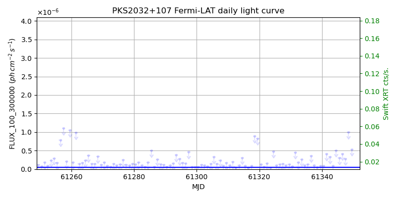
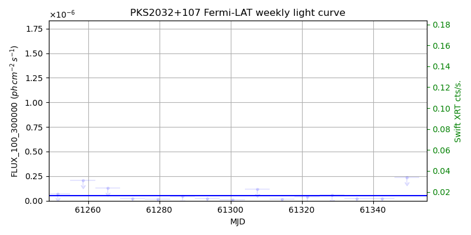
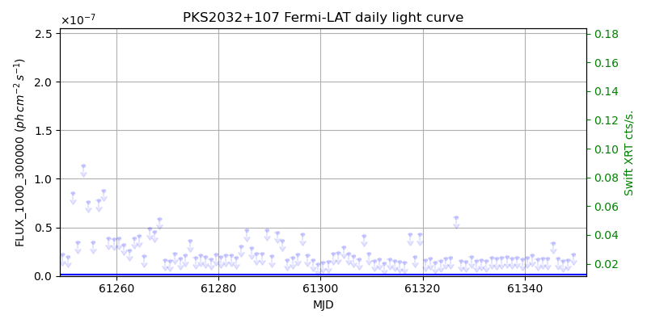
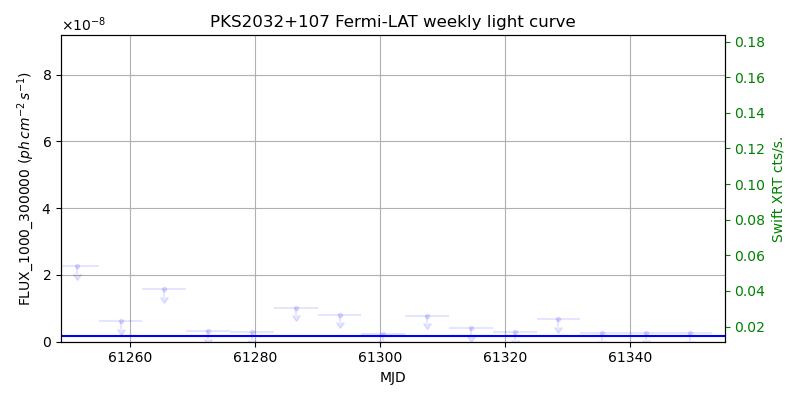

LAT Lightcurve site: https://fermi.gsfc.nasa.gov/ssc/data/access/lat/msl_lc/source/PKS_2032p107
Swift site: https://www.swift.psu.edu/monitoring/source.php?source=PKS2032+107
NED: Query
Time of last update of this page: UT: 2026-11-06 16:27 (MJD: 61350.686)
| Property | Value |
|---|---|
| R.A. | 20:35:22.32 |
| Dec. | 10:56:06.0 |
| z | 0.601 |
| 3FGL SpectrumType | PowerLaw |
| 3FGL PL Index | 2.47 |
| 3FGL Flux_100_300000 | 5.18e-08 1 / (s cm2) |
| 3FGL Flux_1000_300000 | 1.76e-09 1 / (s cm2) |
| 3FGL Flux >200 GeV | 7.38e-13 1 / (s cm2) |
| 3FGL Extrap. Crab >200 GeV | 0.00 |
| 3FGL Flux After EBL Absorption >200GeV | 7.49e-14 1 / (s cm2) |
| 3FGL EBL Crab Fraction >200GeV | 0.00 |

| MJD | dMJD | Flux | dFlux | Frac3FGL | FracCrab>200GeV | EBLFracCrab>200GeV |
|---|---|---|---|---|---|---|
| 61345.50 | 0.50 | 3.05e-07 | 0.00e+00 | 0.00 | 0.00 | 0.00 |
| 61346.50 | 0.50 | 4.13e-07 | 0.00e+00 | 0.00 | 0.00 | 0.00 |
| 61347.50 | 0.50 | 2.83e-07 | 0.00e+00 | 0.00 | 0.00 | 0.00 |
| 61348.50 | 0.50 | 1.00e-06 | 0.00e+00 | 0.00 | 0.00 | 0.00 |
| 61349.50 | 0.50 | 5.36e-07 | 0.00e+00 | 0.00 | 0.00 | 0.00 |

| MJD | dMJD | Flux | dFlux | Frac3FGL | FracCrab>200GeV | EBLFracCrab>200GeV |
|---|---|---|---|---|---|---|
| 61314.50 | 3.50 | 1.76e-08 | 0.00e+00 | 0.00 | 0.00 | 0.00 |
| 61321.50 | 3.50 | 3.74e-08 | 0.00e+00 | 0.00 | 0.00 | 0.00 |
| 61328.50 | 3.50 | 5.57e-08 | 0.00e+00 | 0.00 | 0.00 | 0.00 |
| 61335.50 | 3.50 | 2.12e-08 | 0.00e+00 | 0.00 | 0.00 | 0.00 |
| 61342.50 | 3.50 | 2.17e-08 | 0.00e+00 | 0.00 | 0.00 | 0.00 |

| MJD | dMJD | Flux | dFlux | Frac3FGL | FracCrab>200GeV | EBLFracCrab>200GeV |
|---|---|---|---|---|---|---|
| 61345.50 | 0.50 | 3.41e-08 | 0.00e+00 | 0.00 | 0.00 | 0.00 |
| 61346.50 | 0.50 | 1.79e-08 | 0.00e+00 | 0.00 | 0.00 | 0.00 |
| 61347.50 | 0.50 | 1.56e-08 | 0.00e+00 | 0.00 | 0.00 | 0.00 |
| 61348.50 | 0.50 | 1.65e-08 | 0.00e+00 | 0.00 | 0.00 | 0.00 |
| 61349.50 | 0.50 | 2.25e-08 | 0.00e+00 | 0.00 | 0.00 | 0.00 |

| MJD | dMJD | Flux | dFlux | Frac3FGL | FracCrab>200GeV | EBLFracCrab>200GeV |
|---|---|---|---|---|---|---|
| 61314.50 | 3.50 | 4.02e-09 | 0.00e+00 | 0.00 | 0.00 | 0.00 |
| 61321.50 | 3.50 | 2.79e-09 | 0.00e+00 | 0.00 | 0.00 | 0.00 |
| 61328.50 | 3.50 | 6.68e-09 | 0.00e+00 | 0.00 | 0.00 | 0.00 |
| 61335.50 | 3.50 | 2.56e-09 | 0.00e+00 | 0.00 | 0.00 | 0.00 |
| 61342.50 | 3.50 | 2.75e-09 | 0.00e+00 | 0.00 | 0.00 | 0.00 |
--------------------------------------------------------- Using user-supplied coords: 20:35:22.32 10:56:06.0 2000 --------------------------------------------------------- FLWO UT night of: 2026-11-07 Local Sid. @ Midnight: 02:42 Sunset (-15.0) (local, UT): 18:39 01:39 Sunrise (-15.0) (local, UT): 05:36 12:36 Moonrise (local, UT): 05:16 12:16 Moonset (local, UT): Moon phase: 0.04 --------------------------------------------------------- AzTime LSID UT Obj_el Obj_az Mn_el Mn_az Sep. --------------------------------------------------------- 18:39 21:20 01:39 67.0 208.4 -35.5 278.9 115.4 19:09 21:50 02:09 63.3 223.6 -41.6 283.5 115.1 19:39 22:20 02:39 58.4 235.0 -47.5 288.8 114.8 20:09 22:50 03:09 52.9 243.7 -53.3 295.3 114.5 20:39 23:20 03:39 47.0 250.6 -58.7 303.4 114.2 21:09 23:50 04:09 40.9 256.3 -63.5 313.9 113.9 21:39 00:20 04:39 34.6 261.3 -67.5 328.0 113.5 22:09 00:50 05:09 28.2 265.7 -70.0 346.2 113.2 22:39 01:20 05:39 21.8 269.7 -70.5 6.9 112.9 23:09 01:51 06:09 15.5 273.6 -68.8 26.6 112.6 23:39 02:21 06:39 9.1 277.4 -65.4 42.5 112.3 00:09 02:51 07:09 3.0 281.3 -60.9 54.4 111.9 00:39 03:21 07:39 -2.2 285.2 -55.8 63.5 111.6 01:09 03:51 08:09 -9.6 289.4 -50.2 70.6 111.3 01:39 04:21 08:39 -15.6 293.9 -44.4 76.4 111.0 02:09 04:51 09:09 -21.3 298.8 -38.4 81.4 110.7 02:39 05:21 09:39 -26.8 304.2 -32.4 85.8 110.5 03:09 05:51 10:09 -31.8 310.4 -26.3 89.9 110.2 03:39 06:21 10:39 -36.5 317.3 -20.2 93.7 109.9 04:09 06:51 11:09 -40.5 325.3 -14.2 97.5 109.7 04:39 07:21 11:39 -43.7 334.2 -8.1 101.2 109.5 05:09 07:52 12:09 -46.0 344.1 -1.2 105.0 109.2 05:36 08:19 12:36 -47.1 353.8 3.4 108.6 109.1 --------------------------------------------------------- Dark hours >55 deg.: 1.31 srcstart (UT): 2026-11-07 01:38 srcend (UT): 2026-11-07 02:57